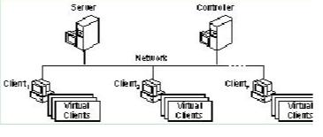
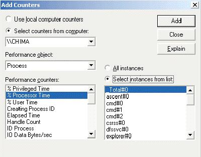
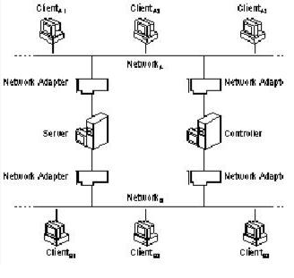

|
| ||
|
| ||
Posted April 13, 1999
This guide provides the information you need to install, configure, and run the Microsoft® Web Capacity Analysis Tool (WCAT). The Microsoft Web Capacity Analysis Tool is included on the Windows 2000® Resource Kit Companion CD.
The Microsoft Web Capacity Analysis Tool (WCAT) and the Microsoft Web Capacity Analysis Tool User Guide are provided "as is" without warranty of any kind. For details, see "Resource Kit Support Policy" in the introduction to the Windows 2000® Resource Kit.
Click here to download the Web Capacity Analysis Tool, x86 version (zipped, 1.1MB).
Contents
Overview
Components of a WCAT test
WCAT Prepared Tests
Before Installing WCAT
Installing WCAT
Verifying the WCAT Installation
Running WCATwith Performance Counters
Analyzing the WCAT Log
Using Performance Counters in a WCAT test
Designing Custom Tests
Keywords
The Microsoft Web Capacity Analysis Tool (WCAT) runs simulated workloads on client-server configurations. Using WCAT, you can test how your Internet Information Services and network configuration respond to a variety of different client requests for content, data, or Hypertext Markup Language (HTML) pages. The results of these tests can be used to determine the optimal server and network configuration for your computer. WCAT is specially designed to evaluate how Internet servers running Windows 2000 (or Windows NT®) and Internet Information Services respond to various client workload simulations.
You can test different server and network configurations by using the prepared WCAT content and workload simulations. When you change your hardware and software configuration and repeat the prepared tests, you can identify how the new configuration affects server response to the simulated client workload. You can use WCAT to test servers with single or multiple processors and to test servers that are connected to multiple networks.
The Web Capacity Analysis Tool provides the following features:
WCAT tests monitor the response of an Internet or intranet Web server to the demands of its clients in a controlled experimental setting. WCAT tests simulate the activity of a Web server and its many client Web browsers communicating across one or more networks.
A WCAT test involves four primary subsystems: a server, a client, a controller, and the network. During a WCAT test the controller and client run different WCAT programs, and the server responds with WCAT files. This section describes these components and the programs they run. Figure 1 shows the pieces involved in a single-network WCAT test.

Figure 1. The hardware for a single-network WCAT test.
The WCAT server is typically a computer configured with Internet Information Services and either Windows NT 4.0 Server or Windows 2000 Server, Advanced Server, or Data Center Server, though other Web servers can be tested. The WCAT server uses sets of prepared sample content files, which simulate those that a server might provide to its clients. The prepared content files simulate Web pages of varying lengths. A particular set of prepared content files is associated with a particular WCAT test.
You can investigate server performance by subjecting the server to a broad spectrum of client demands. You do this by running a variety of prepared tests. Alternatively, you can test the effectiveness of changes to server hardware and software by repeatedly running the same prepared test, before and after hardware and software changes.
In a WCAT test, the server:
With some limitations, any Web server can be tested. (For example, tests do not run on UNIX servers.)
The WCAT client consists of one or more computers running the WCAT client application. The prepared tests provided with WCAT are configured to run with one client computer. If you want to run more than one client computer, see Changing Client Workloads in this guide.
The WCAT client application runs in a single, multithreaded process. Each thread in the process represents a virtual client. Each virtual client makes one connection and page request to the WCAT server at a time. This design enables each client computer to simulate more than one client.
WCAT can support up to 200 virtual clients on each client computer involved in a WCAT test. You should, however, monitor memory use on your client computers. If a client is using more than the total amount of physical memory it has available, the resulting use of virtual memory reduces the speed at which it can send requests. You should scale back the number of virtual clients the computer supports until it is using only physical memory.
Note: Many Web browsers can start multiple simultaneous connections. Therefore, the number of threads used by a WCAT client application does not necessarily bear a one-to-one correlation to the number of client Web browsers connected.
In a WCAT test, you specify what level of client demand the server is subject to, including:
The WCAT controller is a computer running the WCAT controller application. The controller is provided to minimize the effect of test administration on test results; it does so by separating the computer administering the test from the computers being tested. The controller hardware and software are not monitored as part of a WCAT test.
The WCAT controller application initiates and monitors a WCAT test by using three input files, described in the following section. When the test is over, the controller application collects the test results and writes them into output files.
The input files provide complete instructions for a WCAT test and are stored on and interpreted by the controller computer. You can either run WCAT with the controller input files provided with WCAT or design your own tests by creating new or modified input files.
You can use any word processor or text editor to view or edit the input files. There are three standard input files (plus an optional one) for each WCAT test:
During a test, WCAT collects statistics on the activity of the clients and the response of the server and produces detailed reports for later analysis. The statistics are collected by the WCAT controller in the output files. The controller writes the output files based on data gathered by the controller and clients. WCAT produces two types of output files:
In this guide, the network refers to the communications links among the client computers, the controller computer, and the server computer during a WCAT test. You can choose to test the performance of the network as part of a WCAT test. Alternatively, you can provide ideal network conditions so changes in network bandwidth or traffic do not affect test results, and you can focus on testing server and client conditions.
WCAT includes more than 40 prepared, ready-to-run tests you can run to simulate different workloads on your client-server configuration. You can also design and run your own WCAT tests. For information on designing WCAT tests, see "Designing Custom Tests," in this guide. You specify the test you have chosen by typing its name after the WCAT run command at the command line on the WCAT controller. For more information on using the run command, see the procedure "To start a WCAT controller" and the section Using Command Line Switches in this guide.
Files for the WCAT tests are placed the \Scripts directory on the WCAT controller when you install WCAT. You can use any word processing program or text editor, such as WordPad, to examine these files. You can run the tests as they are or edit the test files to customize the tests. There are four types of WCAT tests:
The following sections describe these tests.
Table 1. The basic tests provided with WCAT.
| Name of test | Description |
| 1K | Tests the response of the server to repeated requests for the same 1 kilobyte (K) file. This test can be used to monitor how the server uses the Internet Information Services (IIS) Object Cache and the file system cache. |
| Clntload | Tests the response of the server to an increasing number of clients.
The test begins with the minimum number of client computers requesting a single 1K file. As the test progresses, more client computers are added, each requesting the same 1K file, until the maximum number of client computers is reached. The minimum and maximum numbers of client computers and the number of client computers added in each increment of this test are specified in the Clntload test's configuration file, Clntload.cfg. By default, Clntload begins with 4 client computers and increases the number of clients by 4 in each successive run until the maximum of 24 clients is reached. Each client computer runs five virtual clients. |
| filemix | Tests the response of the server to a typical workload. In this test, clients request 12 files ranging in size from 256 bytes to 256K. The average page size for this test is about 10K, which is commonly observed on most servers on the Internet. The size of the test files and the pattern and frequency of requests for them (that is, their distribution) were chosen by surveying actual client workloads on proxy servers. |
| filemix50 | Tests the response of the server to a typical moderately large workload. In this test, clients request 14 files residing in multiple directories and ranging in size from 256 bytes to 1 megabyte (MB). The total workload is approximately 50 MB. The size of the test files and frequency of requests for them were chosen by surveying actual workloads on proxy servers. If the file system cache on the server computer cannot contain all the files in this workload, the server spends more time reading the files from disk. Increase the server memory or adjust your performance expectations accordingly. For more information on analyzing IIS performance, see Chapter 5, "Monitoring and Tuning Your Server" in the IIS Resource Guide. |
| filemix200 | Tests the response of the server to a typical very large workload. In this test, clients request 14 files from 200 different directories. The files range in size from 256 bytes to 1 MB. The total workload is approximately 200 MB. The size of the files and frequency of requests for them were chosen by surveying actual workloads on proxy servers. If the file system cache on the server computer cannot contain all the files in this workload, the server will be occupied with reading files from disk. Increase the server memory or adjust your performance expectations accordingly. |
| Sample | Tests the response of the server to a variety of different tasks. The workload consists of a set of files that are retrieved by using different types of requests, including standard GET requests, HTTP Keep-Alive connections, and SSL encryption requests. |
| WebStone | Tests the response of the server to the workload used in the WebStone version 1.1 benchmark test. In this test, clients request 18 files ranging in size from 1K to 200K. WebStone is an open benchmark developed by Silicon Graphics, Inc., to measure Web server performance. For more information about WebStone, see: http://www.sgi.com/Products/WebFORCE/WebStone/ |
The WCAT Web application tests use Active Server Pages programs to test the server's performance when it creates contents dynamically.
ASP applications are programs that produce dynamic Web pages. Typically, dynamic content generation is slower and uses more of the server's resources than static content; even so, Web applications are becoming the standard, rather than the exception. Thus, dynamic content generation is a critical point to test. Table 2 lists and describes the ASP tests.
The WCAT ASP tests use a set of eight files: App.asp, Session.asp, QueryStr.asp, Form.asp, Hello.asp, Fibo.asp, Sessid.asp, and Server.asp.
For testing Active Server Pages, as well as for any Web applications that involve several pages, you should turn cookies on. Cookies carry session ID information, and are used by browsers. If a virtual client sends a series of requests to an ASP file and cookies are turned off, then ASP has to create a new session object for each request. This causes increased (and unrealistic) overhead on the server. If cookies are turned on, ASP can reuse the session, as it does with actual browsers: when the client requests an ASP file, the server puts the session ID into a cookie and sends it to the client. The client stores the cookie and sends it with any subsequent requests to the server.
Table 2. Active Server Pages
| Name of test | Description |
| ASP25 | Tests the response of the server to a request for an ASP page. In this test, 25 percent of client requests are for files that require processing by ASP.DLL. The remaining 75 percent of client requests are taken from the filemix test, described in Table 1. |
| ASP50 | Tests the response of the server to a request for an ASP page. In this test, 50 percent of client requests are for files that require processing by ASP.DLL. The remaining 50 percent of client requests are taken from the filemix test. |
| ASP75 | Tests the response of the server to a request for an ASP page. In this test, 75 percent of client requests are for files that require processing by ASP.DLL. The remaining 25 percent of client requests are taken from the filemix test. |
HTTP Keep-Alive tests are modified versions of the basic and Web application WCAT tests. During HTTP Keep-Alive tests, clients request the same files at the same rates as in the standard versions of the tests but request their connections be maintained by using the HTTP Keep-Alive feature. HTTP Keep-Alive tests are used to measure the effect of HTTP Keep-Alives. HTTP Keep-Alives are enabled by default in HTTP version 1.1. HTTP implements Keep-Alives to avoid the substantial cost of establishing and terminating connections. Both the WCAT client and server must support HTTP Keep-Alives.
The HTTP Keep-Alive versions of the WCAT tests are named with a combination of Ka and testname, where testname is the name or an abbreviation of the name of the standard version of the test. For example, the HTTP Keep-Alive version of the 1K test is called Ka1K, and the HTTP Keep-Alive version of the filemix test is called kafilmix. HTTP Keep-Alive versions are provided for all WCAT tests except for filemix50 and filemix200.
SSL tests are modified versions of the basic and Web application WCAT tests. During SSL tests, clients request the same files at the same rates as in the standard versions of the tests but use the Secure Sockets Layer (SSL) encryption protocol. SSL tests are provided to help you measure the effect of SSL encryption on server performance.
SSL versions of the WCAT tests are named with a combination of Ssl and testname, where testname is the name or an abbreviation of the name of the standard version of the test. For example, the SSL version of the 1K test is called Ssl1K. SSL versions are provided for all WCAT tests except for filemix50 and filemix200.
WCAT is very flexible. You can run WCAT tests on a variety of client-server-network configurations. The following sections describe the minimum hardware and software requirements for each component in a WCAT test. The sections also discuss recommended configurations. WCAT has different hardware and software requirements for each component (server, client, controller, and network) of a WCAT test. The following sections list the hardware and software requirements by test component.
The WCAT server has flexible requirements compared to the other computer components under test. It must, however, meet the following hardware and software requirements:
A WCAT client must include the following hardware and software:
Note: WCAT does not support Windows 95 or Windows 98. If you want to run WCAT client software on a computer running either of these operating systems, make a copy of the secur32.dll file and name it security.dll. (If there is already a file named security.dll, do not overwrite it.) This workaround is not supported by Microsoft.
A WCAT controller must include the following hardware and software:
A TCP/IP-based network with a minimum network bandwidth of 100 megabits per second is recommended for running WCAT. During a WCAT test, the controller and clients communicate by using Windows Sockets in conjunction with Transmission Control Protocol (TCP).
Reduced network bandwidth is likely to affect the results of the test. Also, before running a WCAT test verify that the network adapters on all participating computers are working properly and that they do not limit the performance of the computers' connections to the network.
This section discusses some issues that often arise when configuring a WCAT test environment. It also recommends hardware and software configurations that are likely to provide accurate, repeatable results from most WCAT tests. These include:
· The optimal amount of physical memory for the WCAT server. · The best network configuration for a WCAT test. · The recommended number of virtual clients for a WCAT test.To determine the most appropriate configuration for your system, repeat several different WCAT tests under different conditions. Vary the speed and number of processors, the amount of physical memory, the available hard disk space and disk configuration, and network bandwidth and traffic. Also, vary the number and speed of the client computers and the number of virtual clients run on each client computer. Repeat the tests to eliminate any one-time performance limitations that are not specific to the WCAT tests.
Insufficient physical memory in your server computer can limit the performance of Internet Information Services and cause excessive disk operations. Unless you are testing how different amounts of memory affect the performance of your server, make sure that your system has sufficient memory for your configuration. It is recommended that the Server computer should have enough physical memory to contain all static content pages involved in the test simultaneously. For more information on the physical memory requirements of an Internet Information Services, see Chapter 5, "Monitoring and Tuning Your Server" in the IIS Resource Guide, which is included in the Windows 2000 Resource Kit.
A network with limited bandwidth or substantial traffic can limit the performance of your server. Depending on your goals for the WCAT tests, you can include a network with limited bandwidth or provide ideal network conditions so the network is not a factor in the test. To provide ideal network conditions, dedicate a high-bandwidth network to the WCAT tests. There is no single set of recommended bandwidth requirements for the WCAT tests. If your testing involves limited bandwidth, you can simulate a busy or limited network.
To simulate different network conditions, you can use the IIS Bandwidth Throttler to change the bandwidth available to Internet Information Services for static files. For more information about the Bandwidth Throttler, see the online product documentation for IIS.
You can use WCAT to simulate varying client conditions. You can vary the number of client computers in the test, the number of virtual clients running on each client computer, and the rate at which the clients send requests to the server.
To determine the maximum load the server can handle, it is recommended that you use four or more client machines, each running three or more virtual clients, in your WCAT tests. (If your Web server is particularly fast, you may want to use many more client machines, each running twenty or more virtual clients.) The processors in the client computers should be at least as fast as the processors in the server computer. If the client processors are not as fast as the server processors, more client computers should be associated with each server computer.
Two of the three WCAT components involve executable programs, which must be configured before you run them. Configuration is discussed later in this section. The server component consists only of data files, and does not require any configuration.
During installation, you can choose which of the three components you want to install on any given machine. Although it is possible to have a server test itself, the results are not realistic. For testing at light load levels, however, you can run both the controller and client software on one machine.
Run WCAT's setup program on each machine you want to use as a client or controller (or both), and select the appropriate component or components. Remember that you must configure the controller and all clients after installing them. (See "Configuring the Controller and Client Installations" for information.)
For servers that run Windows NT, run WCAT's setup program on each machine you want to test, and select the Server component. For any servers not running Windows NT, however, you must move the files yourself:
To install WCAT on a server not running Windows NT or Windows 2000:
1. First install the WCAT server files on a Windows NT or Windows 2000 server.
2. Run the WCAT server content extraction program in the Microsoft WCAT program group
3. Copy all of the extracted directories with names that start with perfsize (and their contents) from the WCAT server directory on that Windows NT or Windows 2000 Server to the other server's root directory.Note: If after installing the WCAT files you want to remove the files, simply delete all associated files and directories. There is no Uninstall application for the WCAT server.
In order to use WCAT, you must provide the information the client computers need in order to connect to the controller, and the information the controller needs to connect to the server being tested. In order to do this, you need to know the computer name and the IP addresses of both the controller and the server. If you know the computer names of these machines, you can use the TCP/IP ping utility (included in Windows NT and Windows 2000) to determine their IP addresses.
1. On any computer (you can ping a computer from itself), click Start, select Programs, and click Command Prompt.
2. At the command prompt, type ping name where name is the computer name (or IP address) of the computer you want to check.
3. The ping program responds with a line similar to the following:
Pinging name.dns.domain.type [11.1.38.2] with 32 bytes of dataafter which it makes four attempts to connect if the target computer is online and available. The set of four numbers inside the square brackets is the IP address of the target machine. (If you have pinged the IP address directly, the line does not contain the name of the machine.)
For more information on the ping utility, see "TCP/IP Procedures" in Control Panel Help.
4. On the client computer, click Start, select Programs, and click Command Prompt.
5. At the command prompt, type cd directory where directory is the directory in which the WCAT controller software is installed. Doing so switches to that directory. By default, the files are installed in \wcat\control.
6. At the command prompt, type config name (where name is either the computer name or the IP address of the server to be tested) to configure the WCAT controller program. (For example, config 11.1.38.2.) If your server has multiple net cards, and you want the clients to connect to all of them, use the computer name rather than the IP address.
Before beginning a WCAT test, you need to verify that the computers can communicate with each other. To do so, perform the following two procedures:
From the controller, ping the server computer. If the ping command successfully connects to the server, the connection is working. If the ping fails, an error message appears at the command prompt. If the message indicates that the server is unavailable, check to see that it is running and connected to the network, and that the controller is also connected to the network. If you have more than one segment or network, be sure both computers are on the same network or on networks that interconnect. If the message indicates that the name or IP address is incorrect, make sure you are pinging the correct computer. If you are, start Notepad, and open the Srvname.cmd file. Verify that the IP address that appears in Svrname.cmd after the line set webserver= is the same as the IP address of the server. If it is not, either change it in Notepad and save the change, or reconfigure the controller computer. (See "Configuring the Controller and Client Installations," in this guide.)
From each client, ping the controller computer. If the ping command successfully connects, the connection is working. If ping cannot successfully connect to the controller, an error message appears at the command prompt. If this message indicates that the controller computer is not available, check to see that it is running and connected to the network, and that the client computer is also connected to the network. If the message indicates that the name or IP address is incorrect, make sure you are pinging the correct computer. If you are, start Notepad and open the Stctrler.bat file in the \webclient directory. Verify the computer name that appears in Stctrler.bat after the line set WC_CTRLERNAME= and the address that appears after the line set WC_CTRLER= are the same as the computer name and IP address of the controller. If either or both are not, you can change the file directly in Notepad, or reconfigure the client computer. (See "Configuring the Controller and Client Installations," in this document.)
After you ping the controller computer successfully from a client, ping the server computer. If the client cannot connect to the server, verify that both client and server are running and connected to the same network or to interconnected networks, and that you are using the correct IP address (or name) for the server computer.
Perform this verification procedure for each client computer.
If you are testing through a proxy server list the proxy server as the server in the script file (or on the command line), and use the full URL (http://targetserver/path/to/file.htm) for the URL field instead of the relative URL (/path/to/file.htm).
You can direct WCAT to collect data from performance counters on the server computer during any WCAT test. For more information on acquiring performance counter data, see Using Performance Counters in a WCAT Test in this guide. To use counters with WCAT, verify that the controller can monitor the server remotely.
10. Log on to the controller computer, and start PerfMon. (Start:Run perfmon.msc)
11. Click the + button. PerfMon displays its Add Counter dialog.
12. In the Computer field of the dialog, highlight the name of the local computer and type the name of the server computer to replace it.
13. Select an Object from the Object list, and click the name of a counter you want to monitor during the WCAT test. Click Add to add the counter to the chart. Continue with Objects and counters until you have the set you want. Click Done.
When you run a successful WCAT test, PerfMon displays a graph of the counters you selected. This graph indicates that the controller has received data collected by and about the server computer. It also confirms that the counters you want to monitor during the WCAT test are available on the server computer.
If you cannot connect to the server computer with PerfMon or you do not have the required permissions, the test does not succeed. If the test does not succeed, verify that the server computer is started and that the computer name is correct. If you do not have permission to monitor the server computer remotely with PerfMon, you must receive the required permission. For details on granting permission for remote monitoring, see "Remote Performance Monitoring" in the Windows 2000 Resource Kit.
If some of the counters you want to monitor do not appear in the Add Counter dialog box in PerfMon, make sure the service associated with the counters is installed on the server computer and is currently running. Counters that are not installed with Windows 2000 by default (such as the Web Service, FTP Server, and Internet Information Services Global counters) do not appear in the Add Counter dialog box unless the associated service is running on the remote computer.
Running a WCAT test consists of the following steps:
14. Preparing the controller input files
15. Starting the WCAT clients
16. Starting the WCAT controller
17. Starting the IIS or other Web server(s) being tested
18. The warmup period
19. The experimental period
20. The cooldown period
21. The reporting period
22. Preparing the output files
You begin a WCAT test by starting WCAT on the client computers and then starting WCAT on the controller computer. When you start WCAT on the controller, you specify the test you want to run and any special switches for that test. You do not have to start WCAT on the server.
A WCAT test actually begins with the design of the input files, before the first WCAT computer is started. The input files direct the test and specify the activities of the clients during the test. The input files are stored on and interpreted by the controller computer. For a description of the WCAT input files, see "Controller Input Files," in this guide. For a description of how to design WCAT input files to test the configuration possibilities you want tested, see Changing Client Workloads in this guide.
In addition to the standard controller input files, you can prepare an optional performance counter input file on the WCAT controller. For more information on doing so, see Using Performance Counters in a WCAT Test in this guide.
The first step in a WCAT test run is to start the WCAT client program, Wcclient.exe, on each of the client computers. The client computer then attempts to connect to the controller computer. If the controller responds, the test proceeds; otherwise, the client waits for 10 seconds and then tries again to connect to the controller. This process is repeated until the client connects to the controller or you stop the Wcclient.exe program. You can start WCAT on as many clients as you want and leave them running for as long as you want. However, the WCAT controller accepts connections from only the number of clients specified in the configuration input file.
During the WCAT test, the WCAT clients simulate Web browsers by sending requests to the server. The clients keep in memory a log of statistics on the timing and frequency of requests sent to and received from the WCAT server. At the conclusion of the test, the clients send these statistics to the controller. The controller processes these statistics and records the information in the WCAT log file.
23. On the client computer, click Start, select Programs, and click Command Prompt.
24. At the command prompt, type cd directory where directory is the directory in which the WCAT client software is installed. Doing so switches to that directory. By default, the files are installed in \webclient.
25. At the command prompt, type client to start the WCAT client program.
The client then tries to connect to the controller computer. Until the client has connected to the WCAT controller, it displays the following message on-screen:
Connecting
Connect Failed. Error = 10061
Failed to connect to server 111.11.11.1
Controller is either not running a test or the name or ip address incorrect
Sleeping 10 seconds before trying to connect again....
This message indicates normal behavior for a WCAT client. It is not an error message.
26. On the client computer, click Start, select Programs, and click Command Prompt.
27. At the command prompt, type ctrl+c
After the clients are running, you start the WCAT controller program, Wcctl.exe, on the controller computer. The WCAT controller begins by locating and interpreting the controller input files. The controller uses the input files to send instructions to the clients. These instructions tell the clients which prepared test to run.
You should always use the -a and -n switches when you run the controller program. See Using Command Line Switches in this guide, for information. Optionally, the controller can also monitor server performance during the test. This requires the optional testname.pfc input file, where testname is the name of the test you are running. If you use the -p switch, the controller prepares to monitor the counters you identify in testname.pfc. (For more information, see Using Performance Counters in a WCAT Test and Running WCAT with Performance Counters, both in this guide.)
The WCAT controller starts and monitors the WCAT test. When you start WCAT on the controller, you tell it which WCAT test to run. The controller begins the test by telling the WCAT clients which files to request, in which pattern and frequency. WCAT can run both the tests provided with WCAT and tests that you create. The tests provided with WCAT are described in "WCAT Tests," in this guide. For information on creating WCAT tests, see "Designing Custom Tests," in this guide.
Note: Sometimes a .pfc file fails to complete a test. If this happens, run PerfMon separately using the counters specified in the .pfc file, which is a readable text file, and run WCAT directly instead of letting the .pfc file control it.
28. On the controller computer, click Start, select Programs, and click Command Prompt.
29. At the command prompt, type cd directory where directory is the directory in which the WCAT controller files are installed. Doing so switches to that directory. By default, the files are installed in \wcat\control.
30. At the command prompt, type run testname [switches] where testname is the filename of the prepared WCAT test you are running, without the extension, and switches is the set of switches for that test. That is, if you were using the Kafilmix.scr script, you might type run Kafilmix -p -e. If you do not supply a test name, WCAT runs the filemix test. The possible test switches you can use are described in Using Command Line Switches in this guide.
Note: WCAT uses the name of a particular test to name that test's output log file and optional performance results file. If you run a test more than once, WCAT overwrites any existing output files with the same test name. To preserve output files from a test before running the test again, use the -e switch with the run command.
When the controller's preparatory work is complete, it begins responding to client requests for connections to the controller. The controller allows the clients to connect to the controller one at a time, until the number of clients specified in the configuration input file for the test is reached. The status message "All clients started" appears in the controller's command prompt window when the required number of clients have successfully connected to the controller.
If more than the required number of clients attempt to connect, the controller ignores the extra clients. If fewer than the required number of clients connect, the controller waits indefinitely for the others. If the "All clients started" message does not display by the end of the warmup period, you should start troubleshooting client status and connection to the network. When enough clients have connected, the controller sends test instructions to the clients. The client computers display on-screen messages reflecting the receipt of these instructions. By default, the controller monitors the test on TCP/IP port 7232.
Next, start Internet Information Services and the Web (HTTP) Service (or equivalent) on the WCAT server.
The warmup period begins after the clients have received their instructions from the controller. During the warmup period, the clients start sending requests for Web pages to the server. However, the data collected by the clients and controller during the warmup period is not included in the output files, because work done during this period does not properly represent the full workload imposed on the server.
Typically, servers respond more slowly during the warmup period than subsequently. This slow response comes from the fact the servers have not yet loaded frequently used pages into the file system cache, frequently used objects into the IIS Object Cache, or frequently used instructions into the processor cache.
The experimental period is the body of the test. The length of the experimental period is referred to as the duration of the test, in other words the total test time minus the warmup and cooldown periods. During the experimental period, the clients request Web pages from the server based upon the controller's instructions. As the clients work, they gather statistics on their own behavior and on the response of the server.
The controller is also active during the experimental period. The controller keeps track of the elapsed time of the test. It also monitors the performance counters on the server computer, if that switch is selected.
During the experimental period, one or more status messages can be displayed in the clients' command prompt windows. These status messages provide information about the progress of the test.
When the experimental period stops, the cooldown period begins. During the cooldown period, the controller directs the clients to stop sending requests to the server. The clients complete requests in progress and continue to gather performance data. However, the data collected during the cooldown period is not included in the output files, because work done during this period does not properly represent the full workload imposed on the server.
The reporting period occurs after the test. During the reporting period, the clients send the controller the data they collected during the test. After the controller has received all data, the controller closes all client connections. The clients then return to their pretest state. They resume periodic attempts to reconnect to the controller until you stop WCAT.
At the end of the test, the results are computed and written to Scripts\testname.log, where testname is the name of the test run. A single line of information from the log file appears on each client's screen. This single line contains the total number of pages read, the average number of pages read per second, and the actual number of pages read by each client.
During a WCAT test, the controller monitors the operation of the server and collects data on the response of the server to the test. The controller also collects data from the clients during the cooldown period.
When the controller has gathered data from the clients, it calculates information from and summarizes that data. The controller then displays a brief summary of the data in its command prompt window and writes all data to the output log file.
If the optional performance counter switch is used with the run command, the controller adds a Performance Counters section to the log file and creates a performance results file from the data it has collected. For more information about the output files, see Analyzing the WCAT Log and Interpreting a Performance Results File in this guide.
After the controller writes the output files, the controller program stops and closes connections to the client computers. At that point, the specified test is complete. If you are running multiple tests by using a batch file, the next test is automatically started.
When the controller closes the client connections, each client attempts to reconnect to the controller until the client program (Wcclient.exe) is stopped explicitly on each computer running that program.
WCAT records and collects statistical data from the WCAT clients and server during a WCAT test. At the conclusion of the test, WCAT summarizes the data and writes it to an output log file. Data collected during the warmup and cooldown periods of the test are excluded from the log.
WCAT uses the name of the test as the name of the log file in the format testname.log. For example, the log of the 1K test is named 1K.log.
The WCAT log is composed of five sections:
The performance counters section appears only if the WCAT test was run with the p switch set. For more information running WCAT with the -p switch, see Using Performance Counters in a WCAT Test in this guide.
A WCAT log file begins with a file header that identifies the attributes of the test run, including the test date and time and the input and output files used. The following example shows the file header of a representative log file:
Table 3. File Headers.
| WCAT Version | = 4.24 |
| ConfigFile | = sample.cfg |
| ScriptFile | = sample.scr |
| DistribFile | = sample.dst |
| PerfCounterFile | = |
| LogFile | = sample.log |
| Author | = |
| Creation Date | = |
| Test Run Date | = Thu Dec 18 15:37:20 1998 |
| Comment | = |
| Server [IpAddr] | = chimae [chimae] |
| Clients | = 2 |
| Threads | = 1 |
| Buffer Size | = 65536 bytes |
| Sock Receive Size | = 8192 bytes |
| Duration | = 60 seconds (Warmup 10 seconds, Cooldown 10 seconds) |
Table 4. Log File Header Fields
| Field | Description |
| WCAT Version | The version number of the WCAT application used in the test. |
| ConfigFile | The path and filename of the configuration input file used in the test. |
| ScriptFile | The path and filename of the script input file used in the test. |
| DistribFile | The path and filename of the distribution input file used in the test. |
| PerfCounterFile | The path and filename of the performance counters input file used in the test, if any. If the -p switch was not set in the test, no filename appears. |
| Author | The author of the test. This field is optional. |
| Creation Date | The creation date of the test. This field is optional. |
| Test Run Date | The date and time the test began. The test reads the date and time from the controller computer. |
| Comment | The text entered in the Comment field in the configuration file for the test. |
| Server [IpAddr:Port] | Server is the name of the server computer used in the test. IpAddr is the computer name or IP address of the server used in the test. The value of this field reflects the value used with the config command on the controller when WCAT was installed. Port is the TCP port on the server computer that is used by Internet Information Services for the HTTP (WWW) Service. The default TCP ports are 80 (for unsecure connections) and 443 (for secure connections). |
| Clients | The number of client computers used in the test. The Clients value reflects the entry in the NumClientMachines field of the configuration file, unless the value was overridden by using the m switch with the run command. |
| Threads | The number of virtual clients run on each client in the test. Each thread in the WCAT process represents one virtual client. The Threads value reflects the entry in the NumClientThreads field of the configuration input file, unless the value was overridden by using the t switch with the run command. |
| Buffer Size | The size of the receive buffer of the memory cache used in the test, in bytes. You can enter a suggested maximum size for the receive buffer in the MaxRecvBuffer field of the configuration input file. |
| Sock Receive Size | The size of socket receives performed by clients on the response from the web server. Not frequently specified. |
| Duration | The total elapsed time of the test, in seconds, including the length of the warmup and cooldown periods of the test. The Duration value reflects the entries in the Duration, WarmupTime, and CooldownTime fields of the configuration input file. You can override the value of Duration by using the u switch with the run command. |
The results section of the log reports data collected by the WCAT clients during the test. The section consists of a table summarizing the data collected. Each row in this table represents a different measure of client activity or server response. The number of columns in the table varies with the number of clients used in the test. The following is an example of a results table:
Results:
Data, Summary, Rate, 127.0.0.1, 127.0.0.1,
Client Id, 0, 0.00, 1, 2,
Duration, 60, 1.00, 60, 60,
Pages Requested, 9485, 158.08, 4744, 4741,
Pages Read, 9485, 158.08, 4744, 4741,
Total Responses, 9485, 158.08, 4744, 4741,
Avg Response Time, 12, 0.20, 12, 12,
Min Response Time, 0, 0.00, 0, 0,
Max Response Time, 94, 1.57, 94, 78,
StdDev Response Time, 8, 0.13, 8, 7,
Total Connects, 9485, 158.08, 4744, 4741,
Avg Connect Time, 2, 0.03, 2, 2,
Min Connect Time, 0, 0.00, 0, 0,
Max Connect Time, 31, 0.52, 31, 31,
StdDev Connect Time, 6, 0.10, 6, 6,
Connect Errors, 0, 0.00, 0, 0,
Receive Errors, 0, 0.00, 0, 0,
Send Errors, 0, 0.00, 0, 0,
Internal Memory Errors, 0, 0.00, 0, 0,
No Headers Errors, 0, 0.00, 0, 0,
No Status Code Errors, 0, 0.00, 0, 0,
Bad Status Errors, 0, 0.00, 0, 0,
Bad Response Header Errors, 0, 0.00, 0, 0,
Bad Response Data Errors, 0, 0.00, 0, 0,
Data Read, 88457110, 1474285.17, 44242544, 44214566,
Header Bytes, 3775030, 62917.17, 1888112, 1886918,
Total Bytes, 92232140, 1537202.33, 46130656, 46101484,
Avg Header per Page, 398, 6.63, 398, 398,
Avg Bytes per Page, 9724, 162.07, 9724, 9724,
Table 5. The columns of the results table.
| Column | Description |
| Data | The test criterion for which the data in the row was collected. |
| Summary | The sum of the value for that test criteria for all client computers in the test. What the Summary column signifies for a row depends on the row. If the test criteria is a total, the Summary value is the sum of the values for all client computers. If the test criteria is an average, the Summary value is an average of the values for all client computers. |
| Rate | The average value for that test criterion per second of the test. The value of the rate is calculated by dividing the Summary value by the total elapsed duration of the test, in seconds. For the purposes of the Rate column, the duration includes the warmup and cooldown periods of the test. |
| ClientIP | This column is named using the IP address identifying a particular client computer. If you are using multiple clients, the results table has multiple ClientIP columns. (In the example shown here there are two virtual clients; they are both running on the same computer, so the IP addresses are identical.) |
There are multiple ClientIP columns; each represents one client. The ClientIP columns list the client computers in the order they connected to the controller. The values in each client column reflect values for all virtual clients running on that client process.
Note: If the test included a large number of clients, each row contains multiple client columns of comma-separated values. If this is the case, use a spreadsheet or data processing program to organize the rows and columns into a table.
The rows of the results table represent values for different test criteria recorded by the WCAT clients during the test. The following table lists and describes each test criterion by row.
Table 6. Test criterion by row.
| Test criterion (row) | Description |
| Client ID | WCAT identification numbers for the client computers. The Summary and Rate column values for the Client ID row are always zero. |
| Duration | The total elapsed time of the test, in seconds. The duration includes the warmup and cooldown periods. |
| Pages Requested | The total number of pages requested from the server by clients during the test. Each page can consist of one or more files. |
| Pages Read | The total number of pages received from the server by clients during the test. Each page can consist of one or more files. |
| Total Responses | The total number of instances in which the server responded to requests from clients. This value includes responses to requests for connections, as well as requests for pages. |
| Avg Response Time | The average response time recorded by clients. The response time is the elapsed time between the time a request was sent and the time the response was received, in seconds. In the ClientIP column, the average response time is calculated by summing the average response times recorded by each virtual client. |
| Min Response Time | The shortest response time recorded by a client computer during the test. In the ClientIP column, this value is the shortest response time recorded by any virtual client on the client computers. |
| Max Response Time | The longest response time recorded by a client computer during the test. In the ClientIP column, this value is the longest response time recorded by any virtual client on the clients. |
| StdDev Response Time | The standard deviation of the response times recorded by the clients. The standard deviation is a statistical measure of how much values vary from the average value. |
| Total Connects | The number of successful connections established between the virtual clients and the server during the test. |
| Avg Connect Time | The average length of time for a connection between a virtual client and the server during the test. The connect time is the time elapsed between the time the connection was established and the time it was closed, in seconds, as observed by the client. |
| Min Connect Time | The shortest connect time recorded by a client computer during the test. In the ClientIP column, this value is the shortest connect time recorded by any virtual client on the client computers. |
| Max Connect Time | The longest connect time recorded by a client computer during the test. In the ClientIP column, this value is the longest connect time recorded by any virtual client on the client computers. |
| StdDev Connect Time | The standard deviation of a connect time recorded by the client. The standard deviation is a statistical measure of how much values vary from the average value. |
| Connect Errors | The number of connection error messages the clients received during the test. The server closes a connection and sends a connection error message to the client if the connection request has formatting or protocol errors, if the server did not have the resources to support the connection, or if the maximum number of connection permitted for the HTTP (WWW) Service is exceeded. If you have more than 10 connection errors in a test, rerun the test using the performance counters switch setting to investigate processor and memory use on your server. Or reduce the number of virtual clients in the test. You can also use Internet Service Manager to increase the maximum number of possible connections to the HTTP service. |
| Receive Errors | These occur when a socket receive fails. This may indicate a problem on the server, the client, or a problem with the underlying network. |
| Send Errors | These occur when a socket send fails. This may indicate a problem on the server, the client, or a problem with the underlying network. |
| Internal Memory Errors | These are internal memory allocation failures. If you get any of these, your clients do not have enough memory for the work load that you are trying to simulate. |
| No Headers Errors | These indicate that the web server did not send any headers back in response to an HTTP request. This indicates a problem with the server. |
| No Status Code Errors | These indicate that the web server did not send back a status code in response to an HTTP request. This indicates a problem with the server. |
| Bad Status Errors | These indicate that the web server sent back a status code that was different from the expected status code. This may be an error on the server, or a script error. |
| Bad Response Header Errors | These indicate that the web server either didn't send back an expected header, or sent back a different value for an expected header than was expected. This may be an error on the server, or a scripting error. |
| Bad Response Data Errors | These indicate that the web server didn't send back the expected data. This may be an error on the server, or a scripting error. |
| Data Read | The amount of Web page content the virtual clients received from the server, in bytes. The Data Read column does not include the bytes associated with protocol headers. To determine the total number of bytes the clients received from the server, add the values of the Data Read and Header Bytes columns. |
| Header Bytes | The number of bytes the virtual clients received from the server that constitute protocol headers for data. |
| Total Bytes | The total number of bytes the virtual clients received from the server. |
| Avg Header per Page | The average size of the protocol header for each page, in bytes. The Avg Header per Page column is calculated by dividing header bytes by pages read. |
| Avg Bytes per Page | The average size of a test Web page, in bytes, excluding bytes that constitute protocol headers. The Avg Bytes per Page column is calculated by dividing data read by pages read. |
The performance counters section appears in a WCAT log when you run WCAT with the -p switch. This log section displays data collected from the performance counters on the server computer during the WCAT test. For more information on including performance counter data, see Using Performance Counters in a WCAT Test in this guide.
The performance counters section of the WCAT log consists of a table showing the average value of each counter collected during the test and the average value for that counter per page. WCAT calculates the values in the Avg per Page column by dividing the average value of a counter by the rate at which clients read pages. You can find this rate in the results section of the log file, in the Rate column of the Pages Read row.
The following example shows the first few rows of the performance counters section of a log file; in the example, the total processor utilization is 33 percent and the processor utilization per delivered page is 0.57 percent.
Table 7. Performance counters.
| Counter name | Average | Avg per Page |
| System\% Total Processor Time | 33 | 0.57 |
| Process(inetinfo)\% Processor Time | 14 | 0.24 |
| Process(inetinfo)\% Privileged Time | 7 | 0.12 |
The files section of the WCAT log is a two-row table that displays the number of files requested and received by clients during the WCAT test. The file table does not have its own column headings. Instead, it uses the same column headings as in the results table, described in "Results Section." The file table can be thought of as a continuation of the results table. The following table lists and describes the file table rows.
Table 8. File table rows.
| Test criterion (row) | Description |
| Files Requested | The number of files requested by the virtual clients during the test. You can compare the number of files requested to the number of files read to determine how many of the files requested were not received. You can also divide files requested by pages requested (found in the results section) to find the average number of files requested per page. |
| Files Read | The number of files received by the virtual clients in the test. You can compare files read to pages read (found in the results section) to find the average number of files read per page. |
The following example shows a file table from a sample.log file. Column headings are added to the example for reference.
Table 9. File table from a sample.log file.
| Test Criteria | Summary | Rate | Client 1 | Client 2 |
| Files Requested | 9485 | 158.08 | 4744 | 4741 |
| Files Read | 9485 | 158.08 | 4744 | 4741 |
The class statistics section of the WCAT log displays retrieval rate data for pages retrieved by the clients. Data is separated into different tables by page class. You can use the data to compare the performance of the server for different classes of Web pages.
Class is the category WCAT uses to group together similar Web pages, such as static pages or ASP requests. The WCAT controller directs clients to request pages of a given class at a given relative frequency, but it lets the clients select which pages in a class to request. The script file for a WCAT test specifies the pages assigned to each class and gives the class an identifier number. It is useful to consult a test's script file when interpreting the class statistics section of that test's log.
The class statistics consist of a series of three-row tables. Each set of three rows constitutes the data for one class. The following table lists and describes the test criteria in the class table.
Table 10. Test criteria in the class table.
| Test criterion (row) | Description |
| Fetched | The number of pages the clients received from the server. The Fetched row is the same as the Pages Read row in the results table. |
| Errored | The number of requests for pages that could not be satisfied because the server could not find the requested page. The Errored row is the same as the Read Errors row in the results table. |
| Distrib | The distribution percentage for the class. The number is expressed as 100 times the percentage. For example, 906 indicates that this class was requested 9.06 percent of the time. |
There are no column headings in the class statistics table. The first column of the table displays the class identifier of the class measured; the remaining columns are identical to those for the results table.
The following example shows the first two tables in the class statistics section of sample.log. The tables shown are for classes 1 and 2. The column headings in the following example were added for reference.
Table 11. First two tables in the class statistics section of sample.log.
| Class ID | Test Criteria | Summary | Rate | Client 1 |
| 1 | Fetched | 1567 | 5.22 | 1567 |
| 1 | Errored | 0 | 0.00 | 0 |
| 1 | distrib | 906 | 3.02 | 906 |
| 2 | Fetched | 1408 | 4.69 | 1408 |
| 2 | Errored | 0 | 0.00 | 0 |
| 2 | distrib | 814 | 2.71 | 814 |
You can use performance counters to gather additional details about the response of your server to WCAT tests, including information about the processors, physical memory, disk subsystem, and memory cache, and the behavior of services such as Internet Information Services. To collect data for PerfMon input, you start a PerfMon log on the controller computer and direct that log to gather data from the server computer. When the WCAT test is complete, you can use PerfMon to read the log.
PerfMon collects and displays data from internal hardware counters and from counters implemented in drivers, services, and applications. The material in this section is designed for readers who are familiar with PerfMon, including such concepts as performance objects, performance counters, and instances. For more information about PerfMon, see the Windows 2000 Resource Kit and Performance Monitor Help.
To use performance counters in a WCAT test, you:
If the -p switch is specified, the WCAT controller remotely monitors the performance counters listed in the performance counter input file; the controller collects data from the counters every 10 seconds. As discussed in "The Warmup Period" and "The Cooldown Period," WCAT does not include data collected during the warmup and cooldown periods of the test in its summary calculations.
At the conclusion of the test, the controller summarizes the data it has collected from the performance counters and writes the results to an output file. The performance results output file is named in the format testname.prf. In addition, WCAT adds a short summary of the performance counter values to the test log file.
The following sections explain how to create a WCAT performance counter input file, how to submit the file to WCAT, and how to interpret a WCAT performance results file.
The performance counter input file is a formatted file that lists the performance counters you want to monitor during a WCAT test. You can use a performance counter input file in any WCAT test, and you can use the same performance counter input file for many different WCAT tests.
The name of the performance counter input file must be in the format testname.pfc. You can use any testname, but if a .pfc file is intended for use with a particular test script, it is a good idea to give it the same name as that script. By installation default, the file is located in the \Scripts directory on the WCAT controller, along with the configuration file, script file, and distribution file.
The first step in creating a performance counter input file is to decide which counters you want to monitor during the WCAT test. Which counters you choose depend on your particular interests or concerns about server performance.
There are several resources available to help you select counters:
The counters you list in the performance counter input file must be configured on the server computer. Note that some performance counters are always available; others are available only when the application or service they monitor is running on the server computer. To check which counters are available, use the procedure "To test remote performance monitoring," in the section on "Verifying Remote Performance Monitoring" in this guide.
You can use any word processor or text editor, such as Microsoft Word, Notepad, or WordPad to create or read a performance counter input file.
Tip: Look at the sample performance counter input file included with WCAT for reference while you are reading this section. The sample file, Server.pfc, appears on the Windows 2000 Resource Kit CD, and in the \scripts directory in the WCAT controller directory, which by default is \wcat\control.
To monitor a particular counter, list it on a separate line in the input file. If you are monitoring more than one instance of a component, such as more than one process, processor, disk, or network adapter, list each instance on a separate line. You can list up to 50 performance counters in a file; the counters can be listed in any order.
The lines listing the performance counters should be left-aligned with no tabs or indentations. You can include comments in a performance counter input file; to indicate a comment, place a pound sign (#) at the beginning of the comment line.
The entry for each counter should include the name of the performance object you want to monitor, the name or number of the object instance to monitor, and the name of the counter. To find the object name, counter name, and instance name or number, check the Add to Chart dialog box in PerfMon. Figure 2 shows the counters for and instances of the Process object in the Add to Chart dialog box.

Figure 2. Counters for and instances of the Process object in the Add to Chart dialog box.
The format for a performance counter entry is as follows:
object(instance)\counter
where object represents the name of the performance object that includes the counter, instance represents the name or number of the object instance as it appears in PerfMon, and counter represents the name of the performance counter.
In the object section of the entry, type the name of the performance object as it appears in the Add to Chart dialog box, including any spaces.
In the instance section of the entry, type the name or number of the instance. Some performance objects, such as System, do not have instances. But if one or more instance names or numbers appear in the Instance box in the Add to Chart dialog box, you must include a name or number in the performance counter entry.
Include the instance name or number even if there is only one instance of the performance object on the server. If the processor has one server, one instance of the Processor object, number 0, appears in the Instance box. If you are listing a counter for the Processor object, you must include this number 0 in the line.
If you want to monitor more than one instance of an object, list each instance on a separate line in the file. For example, to monitor PhysicalDisk: % Disk Time for two physical disks, 0 and 1, and for the _Total instance that represents both disks, include the following lines in the performance counter input file:
PhysicalDisk(0)\% Disk Time PhysicalDisk(1)\% Disk Time PhysicalDisk(_Total)\% Disk TimeIn the counter section of the entry, type the name of the performance counter as it appears in the Add to Chart dialog box, including any spaces in the name.
For example, to monitor the processor time used by the Internet Information Services process, Inetinfo, you monitor the Process: % Processor Time counter for Inetinfo. An entry for the Process: % Processor Time counter for the Inetinfo process reads as so:
Process(inetinfo)\% Processor Time
In this example, Process is the object, inetinfo is the instance and % Processor Time is the counter.
When you have listed all the counters you want to monitor, save the performance counter input file. You can use any name, but be sure to use the format testname.pfc. Place the file in the webctrl\Scripts directory on the controller.
To monitor performance counters on the server, include the -p switch and the name of the performance counter input file with the run command on the controller command line.
To start WCAT with performance counters
31. At the command prompt on each client computer, type client
32. At the command prompt on the controller, type
run testname [other switches] -p filename.pfc where testname is the name of the WCAT test, other switches represents other valid WCAT test switches, and filename represents the path (relative to the WCAT controller directory) and filename of the performance counter input file. The other switch settings for WCAT are described in Using Command Line Switches in this guide.
For example, to run the Clntload test with the counters listed in the Server.pfc file in the \webctrl\scripts directory, type:
run clntload -p scripts\server.pfc
During the WCAT test, the controller monitors the performance counters every 10 seconds. At the conclusion of the test, WCAT summarizes the results and records them in a performance results file. This results file has the same filename prefix as the performance counter input file but with the filename extension .prf. The next section explains how to interpret the performance results file.
WCAT also provides a performance counter section in the WCAT log file. This performance counter section displays the average values of the counters during the test. For information about the performance counter section of the WCAT log file, see Analyzing the WCAT Log in this guide.
The WCAT performance results file displays the data collected from the performance counters on the server. The data is displayed in a comma-separated, variable-length format, so the file can be used as input for a data processing or spreadsheet application. The file cannot be used as input for PerfMon, however; and PerfMon cannot display charts or reports from WCAT output files.
The performance results file is made up of three sections:
The performance results file begins with a header identifying which test run the given output relates to and what information is included.
For example: File = scripts\filemix.prf NumCounters = 10 MachineName = webserver Start Time = Mon Dec 02 14:10:53 1996The fields in the header are as follows:
WCAT begins monitoring performance counters when the warmup period ends. The Start Time field does not display the time monitoring began, but you can determine the beginning of monitoring. At the conclusion of the warmup period WCAT displays the following message at the command prompt:
Starting to average the performance counters
This message signals the beginning of monitoring.
After the header, the next section of the file is a comma-separated stream of column headings for the table that follows. The column headings appear in the same order as the columns appear in the table. Use your spreadsheet program to associate each column heading with the column it names.
The following is an example of column headings:
TimeSlice, System\% Total Processor Time, Process(inetinfo)\% Processor Time, Process(inetinfo)\% Privileged Time, Process(inetinfo)\% User Time, Memory\Page Faults/sec, System\Context Switches/sec, System\System Calls/sec, Process(inetinfo)\Thread Count, Process(inetinfo)\Private Bytes, HTTP Service\Connection Attempts/sec, HTTP Service\Connection Attempts
The last section of the performance results file is a table displaying the data collected from the server performance counters. Each column of the table represents a performance counter, except for the first column, TimeSlice. The TimeSlice column indicates how often the performance counters were monitored during the test, in seconds. WCAT tries to monitor the counters every 10 seconds, but attempts might be delayed if the processor is busy. Each row of the table represents one observation.
Each entry in the table represents the value of one counter when it was observed. The values are displayed in the units native to the counter. For example, in the following table, the 9 in the second column of the first row represents 9 percent processor use, while the 9 in the sixth column of the middle row represents nine page faults per second. To interpret the table, associate each column with its column heading. The columns appear in the same order as the column headings.
Table 12. Performance Counter Table.
| 10 | 9 | 0 | 0 | 0 | 42 | 67 | 260 | 25 | 1544192 | 0 | 433 |
| 10 | 36 | 16 | 9 | 6 | 9 | 418 | 466 | 25 | 1544192 | 61 | 1065 |
| 10 | 33 | 15 | 7 | 7 | 3 | 385 | 419 | 25 | 1544192 | 54 | 1635 |
You can use WCAT to create and run tests that evaluate your unique Internet Information Services configuration and Web applications. In your custom tests, you can customize client workload, server content and programs, and network configurations. For example, you can use WCAT to evaluate a new Web application during development to understand how the server responds when running the application. You can also evaluate how your Internet Information Services responds to different production environments by varying client workloads and network bandwidth.
You can create and run custom WCAT tests to evaluate the following:
Using the WCAT command line switches, you can make quick, temporary changes at run time without editing input files. The switch settings apply only to the test being run. To use these switches, include them when entering the run command on the controller computer. You can include more than one switch, and you can list switches in any order. Unless specified otherwise in the following table, use a space to separate one test switch from another on the command line. The following table lists and describes the WCAT command line switches.
Table 13. WCAT Command Line Switches.
| Switch | Description |
| -a ServerIP | Specifies the IP address or addresses of the server or servers to test, where ServerIP is that address or addresses. The -a switch overrides the data entered in the config command on the controller computer. Use commas to separate multiple IP addresses. See also -n, following. |
| -c ConfigFile | Specifies the configuration input file for this test. If the -c switch is not applied, WCAT looks for a configuration input file with the same name as the test. ConfigFile represents the path and filename of the configuration input file for the test. Configuration input files can have any name, in the form testname.cfg. |
| -d DistribFile | Specifies the distribution file for this test. If the -d switch is not applied, WCAT looks for a distribution input file with the same name as the test. DistribFile represents the path and filename of the distribution input file for the test. Distribution input files can have any name, in the form testname.dst. |
| -e PrefixName | Specifies the filename prefix for the configuration, script, and distribution input files and the performance results and log output files, where PrefixName is that prefix. If the -e switch is not applied, WCAT uses the name of the test as the filename prefix. You can use the -e switch to prevent WCAT from overwriting the files of a previous run of the test. |
| -l LogFile | Specifies the file to which WCAT writes the log. If the -l switch is not applied, WCAT writes the log file to the directory from which WCAT was run. LogFile represents the full path to the alternate location. |
| m ClientComputers | Specifies the number of client computers to be used in the WCAT test, where ClientComputers is that number. The value of the -m switch overrides the value specified in the NumClientMachines entry in the configuration file for the test. |
| -n ServerName | Specifies the server or servers to be used in the test, as identified by their computer names in ServerName. The -n switch overrides the data entered in the config command on the controller computer. Use commas to separate multiple computer names. See also -a, earlier in this table. |
| -o Offset | Specifies the controller port offset used in the test, as identified in Offset. If the o switch is not applied, the WCAT controller monitors TCP/IP port 7232. You can use this switch to include more than one controller in the test, in which case the first controller runs at port 7232, the second one at port 7233, and so on. If the -o switch is set, then clients also should be configured to connect to the appropriate port. |
| -p PerfFile.pfc | Specifies that software erformance counters on the server are to be monitored during the test. PerfFile.pfc represents the path and filename of the input file that lists the counters to be monitored. |
| -s ScriptFile | Specifies the script file to be used for this test. |
| -t VirtualClients | Specifies the number of virtual clients to run on each client computer in the WCAT test. Use of the -t switch overrides the value specified in the NumClientThreadsMachines entry in the configuration file. |
| -u Duration xm | s| h | Specifies the total time for the test to run, as identified in Duration. Use of the -u switch overrides the time specified by the Duration entry in the test configuration file. Enter m to specify time in minutes, s to specify time in seconds, or h to specify time in hours. If you specify -u, you must specify m, s, or h. The x preceding m or s represents the number of time units the test should run. For example, to run the filemix test for 30 minutes type the following command at the command prompt on the controller: run filemix -u 30m |
It is useful to become familiar with these test switches. For example, by default most prepared WCAT tests specify only one client computer be used in the test, despite the fact that several client computers are recommended to simulate actual conditions. To use more that one client computer, you must either use the -m switch or edit the test configuration file.
The controller input files include the configuration, script, and distribution files and the optional performance counters file. (For information about creating and using performance counters files, see Writing a WCAT Performance Counter Input File in this guide.)
To create a custom test, you can either edit one of the prepared tests or create new controller input files. The changes you make to the input files can change test conditions, the content pages that clients request, and the frequency at which pages are requested. The general procedure is as follows:
33. Edit a sample configuration file, or write a new configuration file, to change the variables that define the number of client computers, the number of threads per client, the duration of the test, or any combination of these conditions. (Keep in mind you can override any of these variables at test time by using run command-line switches.)
34. Edit a prepared test script file, or write a new script file, to identify a new set of content pages for virtual clients to request from the server.
35. Edit a prepared test distribution file, or write a new file, to specify the frequency at which clients request the pages identified in the script file.
You can use any word processor or text editor to edit the controller input files.
The configuration file is located on the controller. After the Wcctl.exe program is started, it reads the configuration file to determine how many clients are included in the test and what test instructions to send to the clients. The client instructions that you can change in the configuration file are described in the following table.
Table 14. The Configuration File.
| Parameter name | Description | Action you can perform |
| Thinktime | Value that determines the random time interval between client requests sent to the server. | Increase or decrease this value to change this time interval. |
| MaxRevBuffer | Size of the client buffer. The default value is 64K. The controller sends this information to the client computers. | Increase this value to increase the size of the client buffer. This value can be increased to a maximum number of 128K. (WCAT sets no limit. However, a large MaxRevBuffer value means more memory is consumed on the client; a small value means that the client might be slow.) Increasing the client buffer size is recommended when testing a server program that contains large amounts of data. |
| CooldownTime | End of test time interval, which is excluded from test results to eliminate the effects of processing completion from the test results. The controller sends this information to the client computers. | Increase or decrease this value to change the amount of time the client can use to complete all processing and data collection. Changing this variable increases or decreases the total test time. |
| WarmupTime | Start of test time interval, which is excluded from test results to minimize the effect of time spent starting the clients and server on test results. The controller sends this information to the client computers. | Increase or decrease this value to change the amount of time allowed for client and server startup. Changing this variable increases or decreases the total test time. |
| NumClientMachines | Number of client computers used in the test. The default value is 1. | Increase or decrease this number to change the number of clients the controller accepts as participants in the test. |
| NumClientThreads | Number of virtual client sessions run on a single client computer. The default value is 1. The controller sends this information to the client computers. | Increase or decrease this value to include multiple virtual clients. The maximum value is 100. The recommended value is as many clients as you can run on the client computer before it becomes CPU saturated; experiment and find the optimal value for your system. |
| Duration | Time value that describes how long the test should run, in seconds. The controller sends this information to the client computers. | Increase or decrease this value to change the test time period. Note that the cooldown time and warmup time are not included in this value. Thus, total test time equals the column values CooldownTime + Duration + WarmupTime. |
| CloseMethod | This specifies what kind of socket close to do when the connection is shutdown from the WCAT client. It can have two values RESET and GRACEFUL. | RESET means to do an abortive close. This will not send a TCP FIN to the server. GRACEFUL means to do a graceful close. This will send a TCP FIN to the server. Most web clients do a RESET. |
| NumIdentServers | This is used only when testing an HTTP proxy server. This is the number of identical servers that are on the other side of the proxy server from the client. For example, if you have Server1, Server2, and Server3 on the other side of a proxy server from the clients, you would set the NumIdentServers parameter to 3. This will cause the clients to alter the URL parameter that is specified in the script so that the request goes randomly to one of the identical servers. For example, if NumIdentServers is set to 3, then the URL, URL=http://TestServer/fizz/bang/file1.htm
would be randomly altered to one of the following: URL=http://TestServer1/fizz/bang/file1.htm URL=http://TestServer2/fizz/bang/file1.htm URL=http://TestServer3/fizz/bang/file1.htm |
This will only effect requests that are proxy style requests, i.e. those have the form http://server/... It will do nothing to any requests not of this form. |
The following is a sample script file.
Test script file for WCAT
Format of Script Specification:
ClassId Operation Files
Note: Operation Strings are case insensitive
Plaza Welcome page =>
NEW TRANSACTION
classId = 1
NEW REQUEST HTTP
Verb = "GET"
URL = "/scripts/welcome.py"
Click Repeat Shopper => Plaza Lobby
NEW TRANSACTION
classId = 2
NEW REQUEST HTTP
Verb = "GET"
URL = "/prd.i/pgen/plaza/JQ04Q9JF66SH2JS700Q79TREBNBGAU1M/plaza1.html"
Click AG => AG Lobby
NEW TRANSACTION
classId = 3
NEW REQUEST HTTP
Verb = "GET"
URL = "/prd.i/pgen/ag/JQ04Q9JF66SH2JS700Q79TREBNBGAU1M/lobby.html"
Click Big Picture
NEW TRANSACTION
classId = 4
NEW REQUEST HTTP
Verb = "GET"
URL = "/prd.i/pgen/ag/JQ04Q9JF66SH2JS700Q79TREBNBGAU1M/ag_bigpicture.html"
Note that the script file begins with comments that recommend a class numbering system for different types of client-server transactions. Following the comment lines are sample transactions. When you create your own script file, use the recommended class identification numbering to identify your transactions. The class identifiers are used to group together similar transactions in the class statistics section of the controller log file. For more information on this log file section, see Class Statistics Section in this guide.
There are four types of program statements you can use in a script file to define new transactions. These are:
These commands are described in the following sections.
The following global commands can be used anywhere in the script file.
setThese following commands are used to define a client-server transaction. The commands must be preceded by a NEW TRANSACTION statement, which signifies a new transaction. You must use the NEW TRANSACTION statement for each transaction you define.
Table 15. Transaction Commands.
| Command | Description |
| ClassId = DWORDValue | Required. ClassId is the class identifier for the transaction. It is used in the distribution file to specify the distribution (that is, the pattern and frequency of requests) for this transaction. The value range for a ClassId is 1 through 4,294,967,296. |
| Server = StringValue | Server is either the NetBIOS name, DNS host name, or IP address of the server included in the transaction. Note that you can run a WCAT test with multiple servers. |
| ThinkTime = DWORDValue Delay = DWORDValue NEW REQUEST HTTP | Transaction will be delayed a random interval between 0 and ThinkTime milliseconds
Transaction will be delayed exactly Delay milliseconds. Overrides ThinkTime setting This command starts a new HTTP request. For more information on HTTP requests, see the next section. |
| NEW REQUEST CLEAR_COOKIE | This command starts a new CLEAR_COOKIE request. For more information on ClearCookie requests, see the "ClearCookie Request Commands" section, following. |
The following commands are used to define a HTTP request. These commands must be preceded by a NEW REQUEST HTTP statement, and you must use the NEW REQUEST HTTP statement for each HTTP request you define in the script file. Remember, WCAT is not a browser, and does not parse HTML. If you request a page that contains links to other files, and you want to download those files also as part of your test, you must request them explicitly in your script. WCAT does not "know" that the links are there.
Table 16. HTTP Request Commands.
| Command | Description |
| Cookie = StringValue | Specifies the cookie name to use. Any cookie sent back to the client as a result of this request is stored in this name. This request includes the cookie to be stored in this name. |
| Verb = StringValue | Specifies the verb to use for this request. Common verbs are GET, POST, and HEAD. |
| URL = StringValue | Specifies the URL to use for this request, for example /perfsize/file1k.txt |
| KeepAlive = BOOLValue | Specifies the client should use the "Connection: Keep-Alive" protocol. Doing so keeps the TCP/IP connection open between the client and the server between requests. |
| SSL = BOOLValue | Specifies the client should use the SSL encryption protocol for this request. |
| ResponseStatusCode = DWORDValue | Specifies the expected response code for this request. For most requests, this code is 200. |
| Port = WORDValue | Specifies the port for the TCP/IP connection for this request. For most requests, the port is 80 and 443 for SSL connections |
| Server = StringValue SSLProtocol = StringValue ThinkTime = DWORDValue Delay = DWORDValue UserName = FileOrStringValue | Server is either the NetBIOS name, DNS host name, or IP address of the server for this request. Note that you can run a WCAT test with multiple servers Specifies the encryption protocol to use as a choice of SSL2, SSL3, PCT and TLS Request will be delayed a random interval between 0 and ThinkTime milliseconds Request will be delayed exactly Delay milliseconds. Overrides ThinkTime setting Specifies the user name for authentication. |
| Password = FileOrStringValue | Specifies the password for authentication. |
| RequestHeader = StringValue | Request headers are cumulative over a request. In other words, if you have multiple RequestHeader statements in the same HTTP request, they are all sent. |
| ResponseHeader = StringValue | Response headers are cumulative over a request. In other words, if you have multiple ResponseHeader statements in the same HTTP request, WCAT looks for all these headers in the response. If you have multiple response headers in the same ResponseHeader statement, they must be returned in the given order to pass the response comparison test. |
| Authentication = <DWORDValue> | For Authentication, 0 means anonymous and is the default; 1 means basic authentication, and 2 means Microsoft NTLM authentication. |
| SaveResponseFile = StringValue | The server's response to the current request is saved on the client under the filename given. This command is provided to make creating a ResponseData file easier. For more information on ResponseData, see the following. |
| ResponseData = FileOrStringValue | Specifies the data the server should return in response to the current request. This data can be specified either as a quoted string or as a filename. If the latter, the file is read and transmitted to the client for comparison. Use a file if the data is large or contains nonprinting characters. |
| UniqueName | This specifies a string in the URL to be replaced by a unique number. The number is guaranteed to be unique for the lifetime of the WCAT test. (Note, it wraps at ~4 billion.) This process is used to generate a URL that will be requested exactly once. For example, if UniqueName is set to UNIQUEVALUE, then the URL /filesize/uniquefile/UNIQUEVALUE.htm will be changed to a value like /filesize/uniquefile/1021.htm. The value is guaranteed to be unique across all clients and threads until it wraps. |
| FollowRedirect = BOOL MaxRedirects = DWORDValue | If this is set to TRUE, then WCAT will follow redirect responses. Also, any transaction with a Server field of #REDIRECT# will be sent to the server most recently redirected to. If following redirections, WCAT will stop redirecting a request after MaxRedirects back-to-back redirections |
| RequestData = FileOrStringValue | Specifies data to send to the server with this request. This setting is generally used for POST and PUT requests. |
The strings used to build up a request have a few predefined substitution variables. After the request is built, the request is scanned for the variables and a substitution is performed. For example, the variable %CLIENT% is a defined value. On the 4th client, the URL "/perf/%CLIENT%.htm" would be modified to read "/perf/4.htm". The full list of variables is below.
NOTE: The variables are substituted both in the request headers properties and in the request data such as a form post.
A ClearCookie request command deletes a cookie name. The old name for the cookie is wiped out. This command must be preceded by a NEW REQUEST CLEAR_COOKIE statement, and you must use the NEW REQUEST CLEAR_COOKIE statement for each ClearCookie request you define.
Command syntax is as follows Cookie = StringValue where StringValue is the cookie name to be deleted.Each modified or new script requires a modified or new distribution file. The distribution file is used by the controller and the client computers to assign a percentage of total test time to each transaction. The controller also uses this file to calculate test results and write them to the log file.
The distribution file lists each of the transactions in the script file by using the class identifier assigned to the transaction. Each listed transaction is assigned a distribution value. The distribution value identifies the portion (percentage) of the experimental period during which each transaction is performed.
Here is a sample distribution file: Test WCAT Distribution File This file specifies the distributions that can be applied to the script file Format of Script Specification: ClassId Distribution Factor(0 to 100) Sum of all distribution factors does not have to be strictly 100. # Eeach factor can have only a single digit after the decimal point. First column is class number. Second value is percentage of test time. 1 10.5 2 9.5 3 10 4 70To create a custom distribution file, you must list each transaction using the class identifier and provide a corresponding distribution value.
You can create a custom test by using programs running on your Internet Information Services instead of the prepared test programs provided with WCAT. In addition to testing existing Web applications, you can use WCAT to evaluate programs as they are developed or during preproduction testing.
By using your programs in a WCAT test, WCAT can help you determine what programs need to be optimized to run on under Internet Information Services. For example, you can use WCAT to compare the functionality of different programs that provide file transfer, Web content, or security functions.
You can test the functionality of the following types of programs:
To use your own ASP script in a WCAT test, model your test on an appropriate test provided with WCAT. In the URL field of the test script file, replace the reference to Form.asp with the name of your ASP page.
You can also create your own HTTP Keep-Alive tests by adding the KeepAlive = TRUE operation to each transaction in the test script file.
To run a WCAT test using your own programs, create a new script file and create HTTP transactions with the appropriate Cookie, URL, SSL, RequestHeader, ResponseHeader, SaveResponseFile, ResponseData, and RequestData values.
A client workload consists of a set of pages, also referred to as a transaction. Each page consists of a set of HTTP requests. In a minimal case, the workload might consist of one transaction containing just one request.
The sample files included with WCAT test different client workloads by varying the number of clients and their queries. You can create custom workload simulations by editing a prepared configuration file or by creating a new configuration file. The data that you change in the configuration is described in "Modifying the Configuration File," in this guide.
Note that you can also use the -m switch with the run command at run time to change the number of clients that connect to the controller and send transactions to the server. For information about this switch, see Using Command Line Switches in this guide.
The prepared test Clntload, provided with WCAT, shows an example of how you might vary the client workload. Clntload specifies a variable client workload by running its test multiple times. The controller starts the first test with 4 client computers. Each time the test is run, the number of clients is incremented by 4, up to a maximum of 24. A log file is produced for each test. The log files are named in the format
logFilePrefix.numberOfMachines.log.The sample test configurations provided with WCAT are designed for a test environment based on a single, dedicated TCP/IP network. However, WCAT can be run in a multiple-network environment, and you can create a WCAT test to evaluate the performance of an Internet Information Services connected to multiple networks. This feature means you can simulate real-world production environments and evaluate the effect of connecting your Internet Information Services to multiple subnets. The following figure illustrates a multiple network model.

Figure 3 Multiple-network test modelEach network in a multiple-network test must be connected to the other networks, either directly or by an intermediary network. Each network must support TCP/IP. Before starting a multiple network test, verify all computers used in the test can connect to each other. For more information on doing so, see Verifying Connections in this guide. Note that you can optimize routing of client requests and network responses by using IP addresses rather than computer names or DNS host names.
Table 17. WCAT keywords for scripting.
| KeyWord | Scope | Settable | Data Type | Default |
| ClassId | Transaction | Yes | DWORD | 1 |
| Server | Transaction/Request | Yes | String | NULL |
| Verb | Request | Yes | String | "GET" |
| URL | Request | Yes | String | "/" |
| Port | Request | Yes | WORD | 80 |
| ResponseStatusCode | Request | Yes | DWORD | 200 |
| KeepAlive | Request | Yes | BOOLEAN | FALSE |
| SSProtocol | Request | Yes | String | Automatic |
| SSLProvider | Request | Yes | String | Automatic |
| SSL | Request | Yes | BOOLEAN | FALSE |
| Authentication | Request | Yes | DWORD | 0 |
| RequestHeader | Request | Yes | String | NULL |
| ResponseHeader | Request | Yes | String | NULL |
| UserName | Request | Yes | String|File | NULL |
| Password | Request | Yes | String|File | NULL |
| HTTPMajorVersion | Request | Yes | DWORD | 1 |
| HTTPMinorVersion | Request | Yes | DWORD | 0 |
| UniqueName | Request | Yes | String | NULL |
| SaveResponseFile | Request | No | String | NULL |
| ResponseData | Request | No | String|File | NULL |
| RequestData | Request | No | String|File | NULL |
| ThinkTime | Request
| Transaction |
Yes | DWORD | NULL |
| Delay | Request
| Transaction |
Yes | DWORD | NULL |
| MaxRedirects | Request | Yes | DWORD | 0 (Infinite) |
| RequestData | Request | No | String|File | NULL |
Data can be specified in the following ways:
The following '.scape sequences are interpreted:
NEW begins all sections. A section can be a TRANSACTION, or a REQUEST.
A REQUEST can be either an HTTP or CLEAR_COOKIE.
Any line with '#' as the first non-white-space character is a comment.
Use SET to specify a new default value for a field.
Use UNSET to revert a field to its original default value.
Note: UNSET does not revert a field to its immediately previous value, unless that value was the original default value.
 Download the Web Capacity Analysis Tool, x86 version (zipped, 1.1MB).
Download the Web Capacity Analysis Tool, x86 version (zipped, 1.1MB).